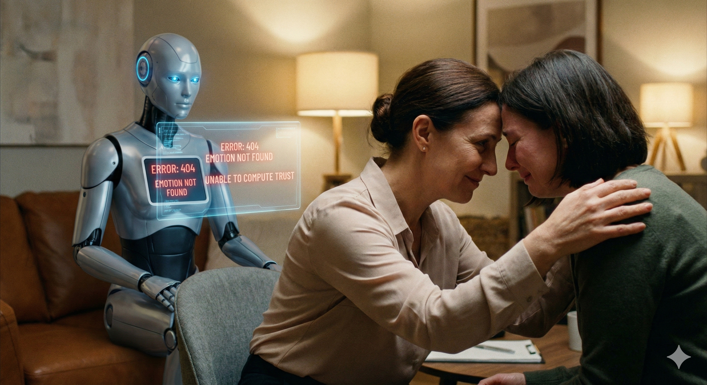

我知道你可能靠專業就能賺到生活的錢，也覺得自己不是銷售，甚至根本不想成為一名業務員。但如果告訴你，學會銷售的技能可以讓你賺到更多錢，你會想學嗎？
以前我也曾是工程師，從來不覺得做業務是一件好事。因為我們學的都是如何做事、如何用數學計算、如何穩紮穩打地度過人生。直到後來我才發現，同期業務的朋友，生活很自由，也過的幸福還能收入無上限，於是我離開舒適圈，邁向我未知的世界。
「在這篇文章的最後，我將總結我從工程師轉職業務時，做對的三個關鍵決定。」
為什麼我們這麼討厭「業務」這兩個字？
很多人會問，業務是什麼樣的人在做的？
有人開玩笑說是「三窮」在做的：窮途末路、窮困潦倒、窮凶惡極。也有人說，想去當業務的人一定是「好吃懶做」，不想曬太陽、整天想吹冷氣才去當業務。
我自己是第二種😂
觀點不一定正確，但為什麼我們這麼討厭成為業務員？
第一點：文化的潛移默化，我們深受儒家思想影響。
子曰：「巧言令色，鮮矣仁。」 孔子告訴我們，一個喜歡把話說得漂亮的人，通常離真正的「仁德」越來越遠。
從小到大，老師和家人教我們的都是「有耳朵沒嘴巴，只能聽不能說」。而「不要亂說話」這件事，又因為許多業務總是誇大其詞更讓人印象不好。
想到專業人士，我們就想到技藝精湛、爐火純青、一絲不苟等好的成語。想到業務，我們就想到花言巧語、巧舌如簧、油腔滑調等不好的成語。
我們很容易將「只會說話不會做事」與業務畫上等號。
第二點：過往不好的經驗。
從小到大，可能是自己或者是身邊的人，都有可能被業務半哄半騙的成交過，或是像我小時候有賣藥的來苗栗鄉下廟會擺攤，都是特別會說話，但銷售的產品可能對我們都沒有幫助。
但，這只是因為我們遇到了一流的騙子，卻還沒遇過一流的銷售顧問。
無人不銷售，無處不銷售，無物不銷售
你可能會說：「我是工程師，我不是業務員。」
你知道 IBM 有一個銷售學校嗎？
在 1980 年代的 IBM，
全世界最聰明的工程師聚在一起，
卻在銷售上連連失利。
他們講技術、講規格、講速度，
但客戶只想聽一句：「這對我有什麼用？」
IBM 終於明白，問題不在產品，而在人。
於是他們成立了「IBM Sales School」，
讓所有工程師去學銷售。
那裡不教程式，而教傾聽、故事、信任。
結果一年後——營收成長 10%，獲利成長 16%。
台積電創辦人張忠謀：「我承認技術很重要，但業務市場行銷也很重要。沒有業務，就沒生意，當然也不會有獲利，根本活不了。」
你也可能會說：「我不是業務員，我是公務員。」
但我問你，你想升遷嗎？需不需要在長官面前表現好自己？你賣的並不是產品，你賣的是你自己。你賣的是讓更多貴人願意靠近你、提拔你，所以你的「產品」就是你自己。
你說你不是業務員，那我再問你：你想要一段幸福的感情嗎？你想要一個更好的對象嗎？
你賣的是你的「魅力」。如果你能對十個異性銷售你自己，讓他們都想跟你在一起，那你不就是一個 Top Sales 嗎？
所以，我們每個人都在扮演業務的角色，不管你願不願意，我們都是業務。
可謂「無人不銷售、無處不銷售、無物不銷售」。
什麼才是真正的銷售？
只有兩個字：吸引
「銷售是吸引，而不是推銷。」
一個真正的業務員不只是賣產品：
我們賣的不是產品，是解決問題的方案。我們賣的不是產品，賣的是生活方式。我們賣的不是產品，更是理念與價值觀。
這才是真正的業務。如果孔子知道現在的業務是以「仁」為出發點，我想他也不會阻止一個人成為業務。
收入 ＝ 解決問題的能力
以前你花四年學一個專業，或許可以工作四十年，一直撐到退休。但現在，你在大學四年所學的專業，可能在未來十年內就會被顛覆。
1900年代，科技每50年翻一倍；2000年的時候，10年翻一倍；2020年縮短到2年；而到現在，科技每6到18個月就翻一倍了。我們再也無法保證你學的專業不會被AI取代。
AI 取代的是「數據與邏輯」，而無法取代銷售中的「信任感、情緒價值、愛的連結」。這才是銷售真正的護城河。

所以殼牌（Shell）的高階主管說過一句話：「學習的比競爭對手快，是你唯一的永續競爭的優勢。」
我認為：收入 ＝ 解決問題的能力。
解決問題的能力來自於你頭腦的知識，而知識來自於你的學習與成長。成為業務，每天遇到的挑戰都不一樣，這一定能讓你學習得比別人更快。
不是說專業不重要，而是現在這個世代，銷售能力是個放大器，如果你能夠擁有一個專業，再加上銷售專業，絕對就能在社會上找到不可取代的能力！
新手成為好業務的三個關鍵步驟
我從工程師轉職業務時，做對的三個關鍵決定
1. 成為你自己
納瓦爾寶典：「在成為自己這件事上面，沒有人比你更厲害。」
不要一味的模仿別人，你一定要知道你是誰、定位是什麼，你可以透過 DISC 行為模式分析，精確定位自己的天賦，別人的路不一定適合你。
2. 找到適合的學習路徑
你的同事、長官就是你的未來，你選擇跟什麼老師，用什麼方法，用什麼工具，將會造就你未來十年完全不一樣的生活。
很多人以為自己不適合當業務，其實是走錯了方法、跟錯了老師。沒有人不適合當銷售，只有不適合你的方式。
如果你是外向者，你的路徑可能是社交與人脈。如果你像我一樣是內向者，你的路徑應該是心理學為底、科學理論為輔，走一條「理性修行」的路。
3. 掌握方法與技術
感性的人： 學習讀懂人性，學習「說故事」。
說故事的架構：事件 → 人物 → 經歷 → 結果，用故事引發共鳴。理性的人： 學習建立「SOP」。把核心問題的探詢技巧模組化，異議處理的標準流程建立，比別人更精細。
「流程體現專業，細節成就質感。」 這將是你最厲害的獨門武器。
如果你的工作收入與服務的客人有關，你就是業務；如果學習銷售能力會讓你的收入放大，那你必須要學。
不要嘴巴說著不想當業務，實際卻做著業務的工作，那留給你的將會是無止境的內耗與迷惘。開心成為一個業務吧！你會發現你做的是業務，其實是在過好你的人生。
「懂推銷的人賣商品，懂人性的人賣價值；銷售不是一門技術，而是一場關於『利他』的修行。」
（下一篇我將會跟你分享很多人說的一個問題：MBTI 的 i 人，行為模式的CS型，內傾性人格是不是不適合當業務？而我本身就是超級內向的人。）
🔧 你的業績卡住了嗎？因為我也走過那段「心累」的路，所以我懂你的痛。如果你想知道...你的「業務原廠設定」是適合開發還是穩定成長？你容易卡在「開發」、「開口」還是「成交」？👇 點擊連結加入 LINE私訊「想知道銷售天賦」，15分鐘幫你找到業務專屬天賦!https://line.me/ti/p/jzdho94spl